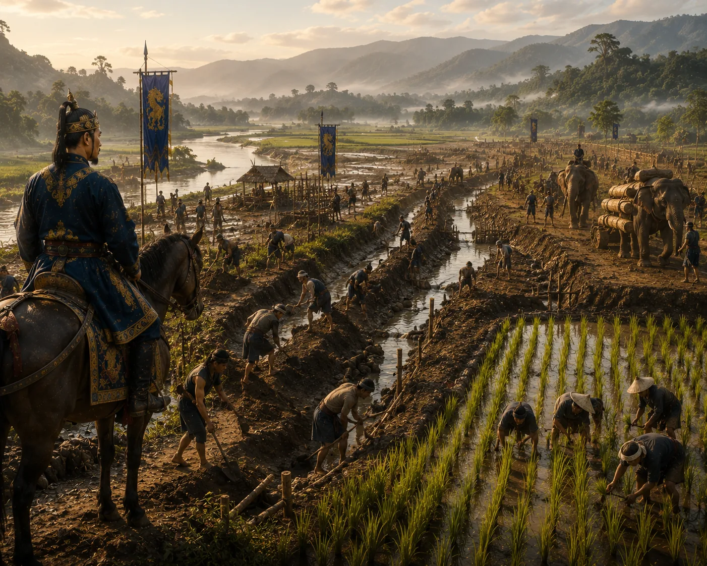

Large-scale Swamp Reclamation and Bunding
c. 1285 · The coming of Sukaphaa

Large-scale drainage canals, dykes, and earthen bunds constructed across alluvial marshlands to open vast new paddy fields.
Sources have not yet been catalogued for this record.
People: Subinphaa
Open this scene in the interactive archive · Follow this event on MAP